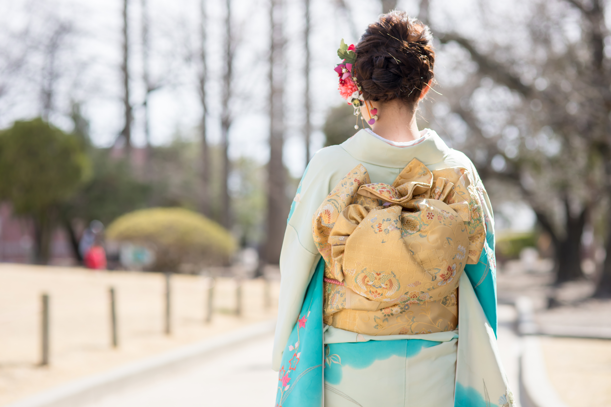

2013年開業／JR亀田駅 東口 徒歩2分
式の朝は、たいてい早く始まります。
nicoでは時間外・早朝のご相談に応じています。何時に伺えばよいか、まずはお電話でご相談ください。
平日 10:00–20:00／土日 9:00–19:00
定休日 月曜・第1火曜・第3日曜
MORNING 当日の朝
着付けで一番心配なのは、料金よりも時間だと思います。おおよその流れを載せておきます。 ご家族の人数やお支度の内容で前後しますので、目安としてご覧ください。
ご来店（時間外）
成人式当日は開店前にお開けします。ご希望の時間は、ご予約時にご相談ください。
ヘアセット
髪飾りをお持ちの場合は、この時にお預かりします。
メイク
ご希望があればお手持ちの化粧品を使います。
着付け
お振袖・小物一式をお持ちください。前日までにお預かりすることもできます。
仕上げ・お写真
歩き方、座り方、着崩れたときの直し方を、その場でお伝えします。
お見送り
式典・前撮りのお時間から逆算して、開始時刻を決めます。
ご来店
お子様のご機嫌のよい時間に合わせて調整できます。ご相談ください。
ヘアセット
途中で休憩をはさみます。ご兄弟が一緒でも大丈夫です。
着付け
お着物・小物はお持ち込みください。足りないものがあれば事前にお伝えします。
仕上げ
ご参拝の間に着崩れたときの、簡単な直し方をお伝えします。
お見送り
ご参拝・お写真へ。お荷物はお預かりできます。
お帰りの着替えについて ご参拝のあとにお立ち寄りいただければ、着物を脱ぐお手伝いもできます。 ご希望の場合はご予約時にお知らせください。
SHICHIGOSAN 七五三
着付けとヘアメイクを承ります。お着物はお持ち込みください。11月の土日は混み合いますので、 日取りが決まりましたらお早めにご相談ください。
三 歳
被布・お祝い着
短い時間で終えられるよう進めます。途中で休憩をはさみます。
五 歳
羽織袴（男の子）
袴の丈や紐の位置は、当日の動きやすさを見ながら合わせます。
七 歳
四つ身・帯結び
日本髪をご希望の場合は +¥1,100 で承ります。
表示はすべて税込価格です。
SEIJINSHIKI 成人式・振袖
成人式は、地域の全員が同じ日の同じ朝に支度をします。受けられる人数に限りがありますので、 秋のうちにお声がけいただけると確実です。
表示はすべて税込価格です。成人式当日の受付時間は、お電話でご相談ください。
前日までにできること
お振袖・帯・小物一式を前日までにお預かりできます。当日の朝、忘れ物の心配がなくなります。 足りない小物があれば、お預かりの時点でお知らせします。OTHER その他の着付け
七五三や成人式に付き添われるご家族の分も、あわせて承ります。同じ朝にまとめてお支度できます。
表示はすべて税込価格です。
Q&A よくあるご質問
当店では衣装のご用意はしておりません。お手持ちのお着物、またはレンタルされたものをお持ちください。どこで借りればよいか迷われている場合は、近隣のお店をご案内できます。
お着物一式のほか、肌着・足袋・腰紐などの小物が必要です。レンタルの場合はセットに含まれていることが多いのですが、不足しやすいものもあります。ご予約の際にお持ちのものをお伺いして、足りないものをお伝えします。
大丈夫です。ご家族連れのお客様が多いお店です。ベビーカーもそのままお入りいただけます。
ご相談ください。成人式など、どうしても早朝になる日は、開店前にお開けしています。ご希望の時間をお伝えいただければ、可否をその場でお答えします。
お帰りの前に、直し方を実際にお見せします。それでも難しいときは、お電話いただければ対応します。
七五三は10月中、成人式は11月中を目安にお願いしています。それ以降でもお受けできる場合がありますので、まずはお電話ください。
SHOP お店のこと
2013年に開いた、亀田の美容室です。ふだんはカットやカラーで、お子様からご年配の方まで、 ご家族そろって通ってくださるお客様が多いお店です。着付けもそのつづきで承っています。
RESERVATION ご予約
お着物が決まっていなくても、式の日が分かっていればご予約できます。時間の相談だけでも構いません。
025-288-5087平日 10:00–20:00／土日 9:00–19:00
定休日 月曜・第1火曜・第3日曜